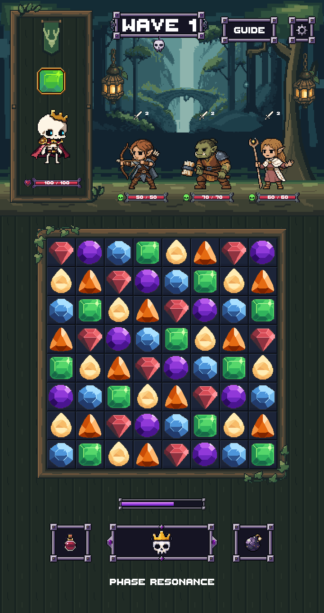

Actual Unity art-only preview. Frame meets all four tile edges. Approved art, 64x64 tiles/gems, portrait and lower HUD are unchanged. No merge.

Full 2x Unity captureVerification and limitationsMeasured checks
Existing zone artwork shown here; the new Forest art remains a separate review. All five zones use the same playable board and portrait slot dimensions on the same viewport.
dungeon magical-forest drowned-court ironvein-excavation frostwake-peaks| Viewport | Board | Portrait | Zones |
|---|---|---|---|
| 1080x1920 | 814.495 square | 292 x 562 | 5/5 |
| 720x1280 | 545.099 square | 195 x 406 | 5/5 |
| 1080x2400 | 814.495 square | 292 x 812 | 5/5 |
| 1080x2400-safe | 796.475 square | 286 x 806 | 5/5 |
| 360x640 | 241.465 square | 97 x 230 | 5/5 |
Unity compilation and 25 three-enemy layout cases pass. Three historical Forest test failures also reproduce on unchanged HEAD; see the report. No device/build claim.